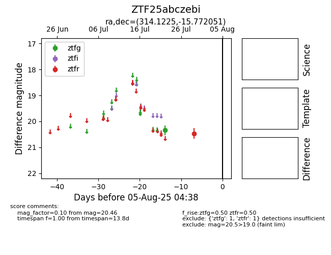

Target ZTF25abczebi at 2025-08-05 04:38, see:
FINK: fink-portal.org/ZTF25abczebi
Lasair: lasair-ztf.lsst.ac.uk/objects/ZTF25abczebi
ALeRCE: alerce.online/object/ZTF25abczebi
alt names
ZTF25abczebi (ztf,fink)
coordinates:
equatorial (ra, dec) = (314.1225,-15.77205)
galactic (l, b) = (31.9446,-34.64061)
photometry
last ztfg=20.34, ztfr=20.46
1 ztfg, 1 ztfr detections
